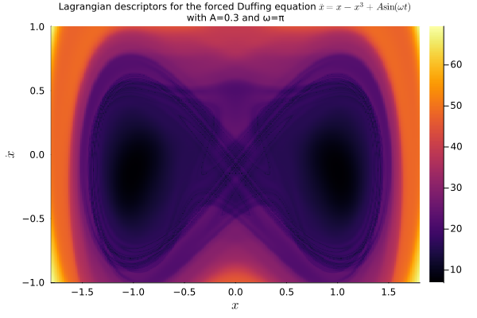
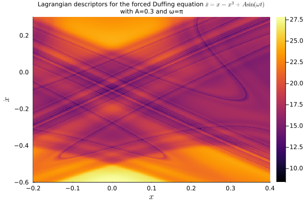
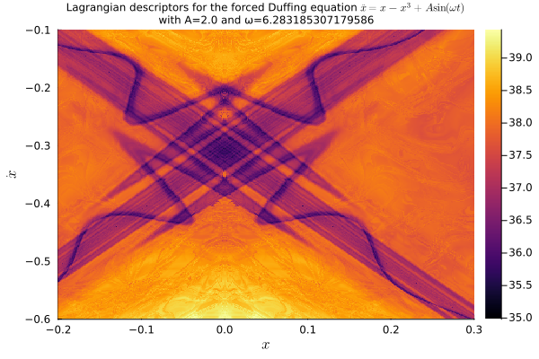
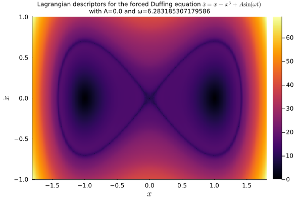
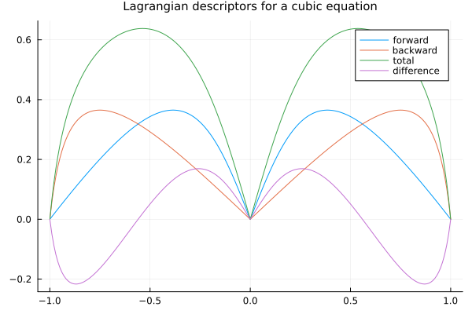

Ordinary Differential Equations
We considere, here, some examples of applying the Lagragian descriptor method to equations of the type ODEProblem.
Periodically-forced Duffing equation
We start with an application of the method of Lagrangian descriptors to the periodically-forced Duffing equation, as illustrated in Painting the Phase Portrait of a Dynamical System with the Computational Tool of Lagrangian Descriptors. The equation takes the form
\[\ddot x = x - x^3 + A\sin(\omega t).\]
We write it as a system
\[\begin{cases} \dot x = y, \\ \dot y = x - x^3 + A\sin(\omega t). \end{cases}\]
The idea is to set up this system as an ODEProblem from SciML/DifferentialEquations.jl, then wrap it as a LagrangianDescriptorProblem from LagrangianDescriptors.jl, which we can then solve as an ensemble problem and plot the result.
So we first load the relevant packages:
using OrdinaryDiffEq, Plots
using LinearAlgebra: norm
using LagrangianDescriptorsNext we set up the ODEProblem:
function f!(du, u, p, t)
x, y = u
A, ω = p
du[1] = y
du[2] = x - x^3 + A * sin(ω * t)
end
u0 = [0.5, 2.2]
tspan = (0.0, 13.0)
A = 0.3; ω = π; p = (A, ω)
prob = ODEProblem(f!, u0, tspan, p)With the ODE problem setup, we choose an infinitesimal Lagrangian descriptor, a collection of initial conditions on the phase space, which is the region to be "painted", and finally we build the LagrangianDescriptorProblem:
M(du, u, p, t) = norm(du)
uu0 = [[x, y] for y in range(-1.0, 1.0, length=301), x in range(-1.8, 1.8, length=301)]
lagprob = LagrangianDescriptorProblem(prob, M, uu0)The Lagrangian descriptors are the time-integration of the infinitesimal descriptor along forward and backward solutions of the equation. They are integrated along with the solutions by "solving" the LagrangianDescriptorProblem, with an overload of the solve method from the SciML ecosystem:
lagsol = solve(lagprob, Tsit5())With the solution at hand, we plot the Lagrangian descriptors to visualize the dynamics of the system:
plot(lagsol, title="Lagrangian descriptors for the forced Duffing equation \$\\ddot x = x - x^3 + A\\sin(\\omega t)\$\nwith A=$A and ω=$ω", titlefont=8, xlabel="\$x\$", ylabel="\$\\dot x\$")
savefig("img/duffing.png")
We may zoom closer to the origin to find the following "painting":
uu0 = [[x, y] for y in range(-0.6, 0.3, length=601), x in range(-0.2, 0.4, length=401)]
lagprob = LagrangianDescriptorProblem(prob, M, uu0)
lagsol = solve(lagprob, Tsit5());
plot(lagsol, title="Lagrangian descriptors for the forced Duffing equation \$\\ddot x = x - x^3 + A\\sin(\\omega t)\$\nwith A=$A and ω=$ω", titlefont=8, xlabel="\$x\$", ylabel="\$\\dot x\$")
savefig("img/duffing2.png")
If we want to change parameters, we just remake the original ODEProblem (in the future I should add the option to remake the LagrangianDescriptorProblem itself.)
A = 2.0; ω = 2π; p = (A, ω);
prob = remake(prob, p=p)
uu0 = [[x, y] for y in range(-0.6, -0.1, length=501), x in range(-0.2, 0.3, length=401)]
lagprob = LagrangianDescriptorProblem(prob, M, uu0)
lagsol = solve(lagprob, Tsit5());
plot(lagsol, title="Lagrangian descriptors for the forced Duffing equation \$\\ddot x = x - x^3 + A\\sin(\\omega t)\$\nwith A=$A and ω=$ω", titlefont=8, xlabel="\$x\$", ylabel="\$\\dot x\$")
savefig("img/duffing3.png")
Autonomous Duffing equation
For visualizing the autonomous case, we may rewrite the system or, since we already have the non-autonomous case implemented, we just set the amplitude of the forcing term to zero:
A = 0.0; ω = 2π; p = (A, ω);
prob = remake(prob, p=p)
uu0 = [[x, y] for y in range(-1.0, 1.0, length=301), x in range(-1.8, 1.8, length=301)]
lagprob = LagrangianDescriptorProblem(prob, M, uu0)
lagsol = solve(lagprob, Tsit5());
plot(lagsol, title="Lagrangian descriptors for the forced Duffing equation \$\\ddot x = x - x^3 + A\\sin(\\omega t)\$\nwith A=$A and ω=$ω", titlefont=8, xlabel="\$x\$", ylabel="\$\\dot x\$")
savefig("img/duffing4.png")
A scalar cubic equation
Although one-dimensional problems are easier to understand, the method also works for such problems. Here we experiment with the scalar cubic equation
\[ \frac{\mathrm{d}x}{\mathrm{d}t} = x - x^3\]
This equation has two stationary solutions, associated with the fixed points $x=0$ and $x=1$.
We setup the ODEProblem:
f(u, p, t) = u - u^3
u0 = 0.5
tspan = (0.0, 1.0)
prob = ODEProblem(f, u0, tspan, p)Build the LagrangianDescriptorProblem:
M(du, u, p, t) = norm(du)
uu0 = range(-1.0, 1.0, length = 201)
lagprob = LagrangianDescriptorProblem(prob, M, uu0)Solve it:
lagsol = solve(lagprob, Tsit5())and plot it:
plot(
uu0,
lagsol(:forward),
label = "forward",
title = "Lagrangian descriptors for a cubic equation",
titlefont = 10,
)
plot!(uu0, lagsol(:backward), label = "backward")
plot!(uu0, lagsol(), label = "total")
plot!(uu0, lagsol(:difference), label = "difference")
savefig("img/cubic.png")In any of the Lagrangian descriptors (forward, backward, total, and difference) we distinguish the two fixed points.
